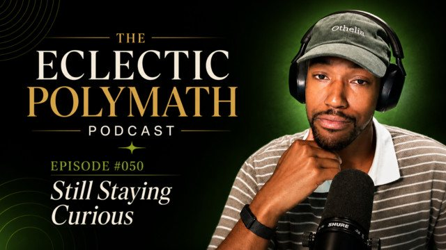

The Eclectic Polymath Podcast · Archive
#050: Still Staying Curious

About this episode
Fifty episodes in, we pause the usual deep dive format for a different kind of episode: a human check-in from the mind behind the machine.
In this milestone reflection, Joshua looks back at the first fifty episodes of the show, tracing how a curiosity project turned into a living archive of questions, obsessions, research rabbit holes, and unexpected through lines. From music ownership and cartels to religious texts, world leaders, fashion, economics, Princess Diana, Degrassi, socialism, and the Age of Aquarius, the episode explores not just what the show has covered, but why those topics showed up in the first place.
We also take another look at the process behind the podcast: deep research reports, primary texts, AI tools, synthetic hosts, personal conversations, movie inspirations, random thoughts, and the fascinating moment when a question becomes an episode.
Key points
- In this milestone reflection, Joshua looks back at the first fifty episodes of the show, tracing how a curiosity project turned into a living archive of questions, obsessions, research rabbit holes, and unexpected through lines.
- From music ownership and cartels to religious texts, world leaders, fashion, economics, Princess Diana, Degrassi, socialism, and the Age of Aquarius, the episode explores not just what the show has covered, but why those topics showed up in the first place.
- deep research reports, primary texts, AI tools, synthetic hosts, personal conversations, movie inspirations, random thoughts, and the fascinating moment when a question becomes an episode.
- At its core, this is a reminder that even though the show is AI-generated, it is not automated curiosity.
- Episode #050 is about still being curious; fifty episodes later, with a clearer sense of what this show is becoming.